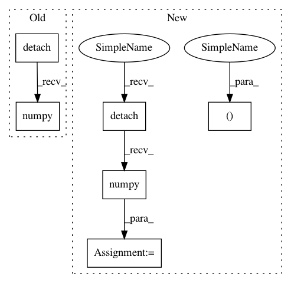

86aca57545cfe312151cc35528035cd9c0aafe2d,art/classifiers/pytorch.py,PyTorchClassifier,predict,#PyTorchClassifier#Any#Any#,48
Before Change
self._model.train(False)
// Run prediction
preds = self._forward_at(torch.from_numpy(inputs), self._logit_layer).detach().numpy()
if not logits:
exp = np.exp(preds - np.max(preds, axis=1, keepdims=True))
preds = exp / np.sum(exp, axis=1, keepdims=True)
After Change
// if not logits:
// exp = np.exp(preds - np.max(preds, axis=1, keepdims=True))
// preds = exp / np.sum(exp, axis=1, keepdims=True)
(logit_output, output) = self._model(torch.from_numpy(inputs))
if logits:
preds = logit_output.detach().numpy()
else:
preds = output.detach().numpy()
return preds
In pattern: SUPERPATTERN
Frequency: 3
Non-data size: 6
Instances
Project Name: IBM/adversarial-robustness-toolbox
Commit Name: 86aca57545cfe312151cc35528035cd9c0aafe2d
Time: 2018-05-17
Author: M.N.Tran@ibm.com
File Name: art/classifiers/pytorch.py
Class Name: PyTorchClassifier
Method Name: predict
Project Name: pyannote/pyannote-audio
Commit Name: 8b87b221bb1b51ae45013054b2380f1dd5f49164
Time: 2019-07-15
Author: hbredin@users.noreply.github.com
File Name: pyannote/audio/labeling/extraction.py
Class Name: SequenceLabeling
Method Name: forward
Project Name: rusty1s/pytorch_geometric
Commit Name: 69dd0827d09eae0b4e6b95df854b2814175c9248
Time: 2019-04-10
Author: matthias.fey@tu-dortmund.de
File Name: torch_geometric/nn/models/signed_gcn.py
Class Name: SignedGCN
Method Name: create_spectral_features